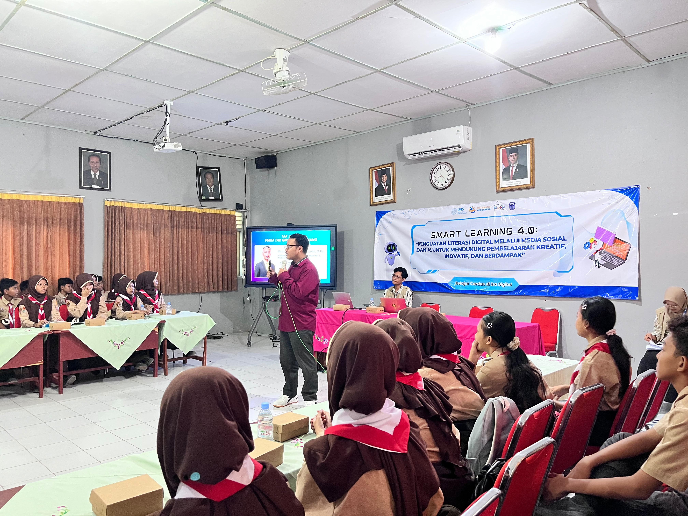

Media pembelajaran matematika berbasis cerita interaktif yang membantu siswa memahami konsep matematika secara lebih menarik.
Hibah Jarpak merupakan program asistensi mengajar yang dilaksanakan oleh mahasiswa Pendidikan Matematika Universitas Sebelas Maret di SMP Negeri 1 Polokarto.
Program ini bertujuan meningkatkan kualitas pembelajaran matematika melalui media dan inovasi pembelajaran yang menarik.